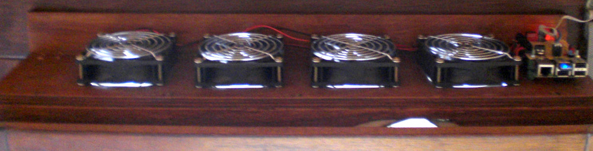
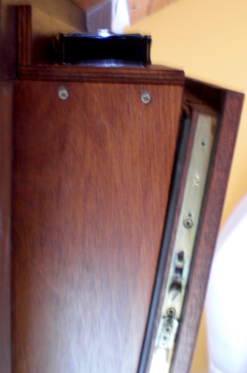
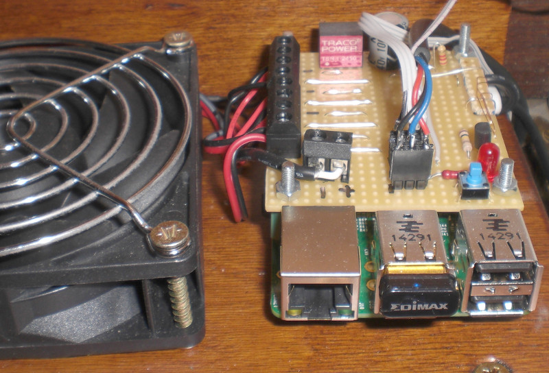
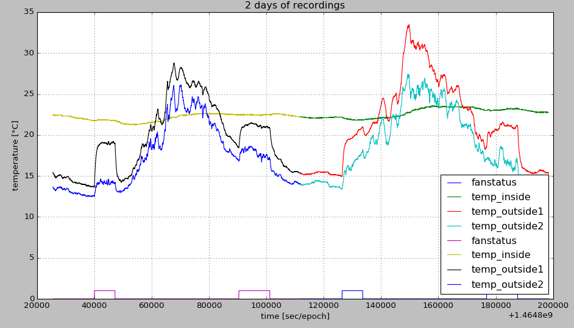

raspi tilted window fan controller
I've build a fan controller with a raspi that drives 4 fans and is placed on top of a tilted window.
A raspi turns the fans on and of, measures the temperature inside and outside of the room.
The raspi tracks the temperature and stores the data in HDF5 files for later analyses.
mechanics

A wooden construction closes the gap between the tilted window and the frame.


Beside the last fan I've placed the raspi with a power supply, some leds and drivers for the fans.
Here are some sketches of the mechanics drawn with inkscape.
electronics
Here's a link to the schematic of the extra circuit
The used parts are:
- A 24V to 5V switching regulater provides the power for the raspi. It's a Traco TSR1-2450
- There are 3 connectors for temperature sensors, I'm using DS18S20 senosors.
- To switch the fans I've used Infineon BSP742 highside switches
software
Basically 200 lines of python code, see fancontroller.py.
Code has not all features, but it works for now.
results
Here are some measurements of the temperatur sensors over a few days.

While the temperatur sensor inside has a flat line the outside temperature measurements are pretty bad. When the fans are running the warm air from inside heats up the sensors outside.
Seems I've to find a better place for the two outside sensors...
Werner Hoch
"
Last modified: Sun Jun 5 11:51:37 CEST 2016
{kind=link}